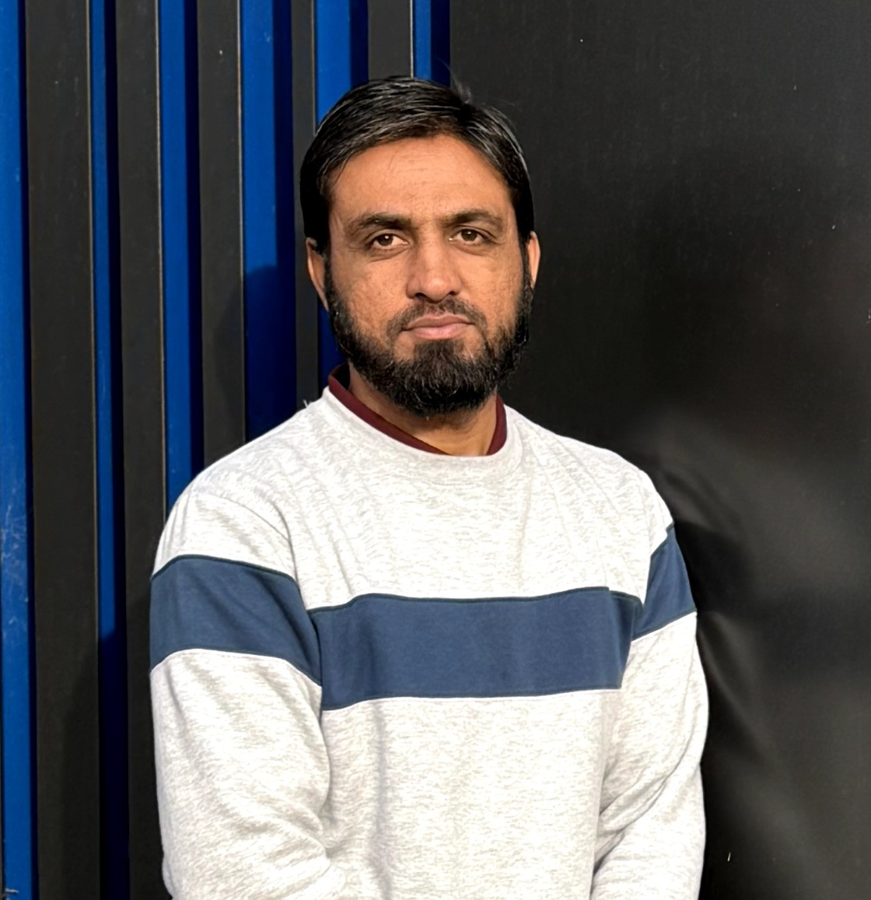

Fawad Khan
Research Fellow in AI, Optimization & Robotics
- 📍 Canberra, Australia
- 📧 fawad.khan@canberra.edu.au
- Google Scholar
- Scopus
- ORCID
About FAWAD Lab
The Future of AI with Real-World Adaptive Dynamics (FAWAD) Lab, led by Dr. Muhammad Fawad Khan, focuses on developing intelligent systems that integrate machine learning, optimization algorithms, and dynamic modeling to solve real-world challenges.
Our research spans human-centric robotics, neuro-mechanical control, reinforcement learning, fluid dynamics, and biomechanical modeling. We emphasize collaboration across academia, industry, and healthcare sectors, aiming to create explainable and adaptive technologies. The lab is dedicated to open science and shares resources on GitHub.